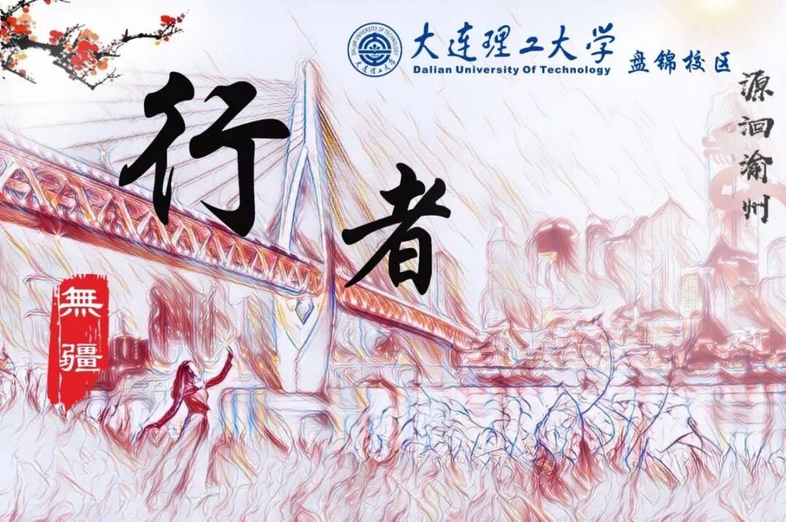
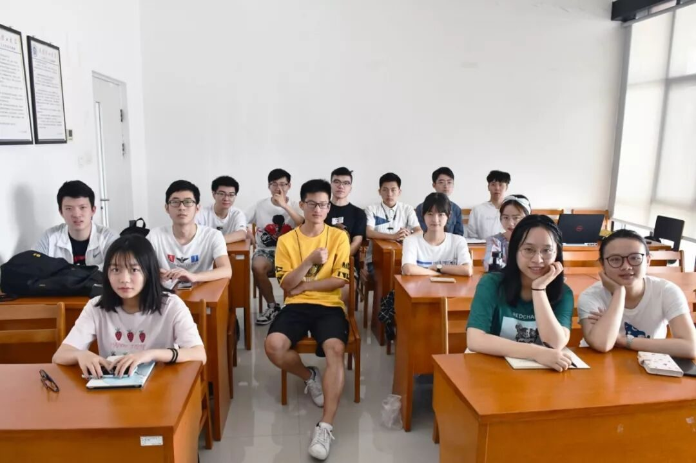
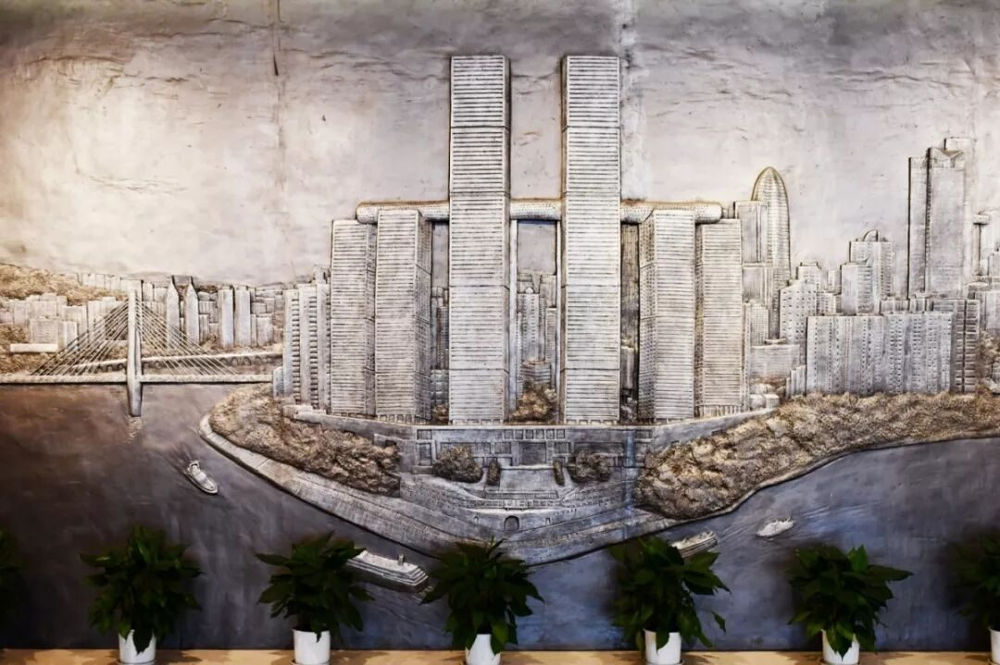
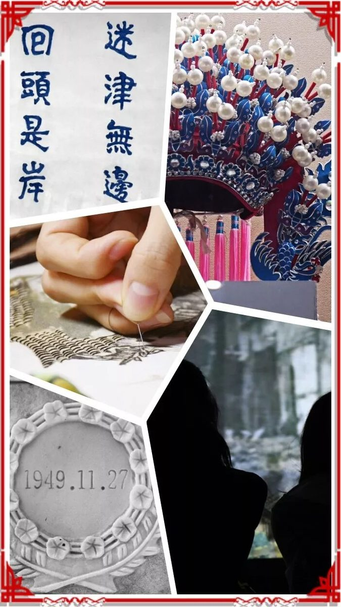
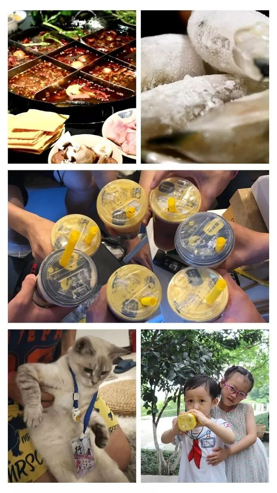

【渝传尺素·四】你是我的可遇不可求

行者
丛雨晴
所谓思者，愿者上钩
所谓行者，前程无疆
遇见陌生的你，携手翘首远方
直至秉烛夜谈，尚浅几日共事


相遇本已不易
若要相知
怕求而不得
索性随心随缘
我们做文化调研，做的不是旅游项目
做的是调研，邂逅的是未来
我们希望辐射，渴求文化
探寻方法，追求改变。
❖


每一步路途，都是先人的智慧
每一场远行，都希望，后人追思，并展望
我们攀登山城里，穿梭在轨道中，
来回于江左江右
我们甚至来不及看一眼
重庆的夜色旖旎
总归是窥探到了，不一样的巴渝和英雄



很多时候，我们没有预料过这一次的相遇，可以带给我们什么计划之外的结果。因缘际会，恰逢其时。
我们看见了川剧的惊艳，这才触碰到他的悲哀；我们遇见了蜀绣的空灵，这才听见了过于表面的夸赞；我们踱步在英雄们的墓碑前，这才哀叹着践踏英雄骸骨的，生人的轻视。





我们的确是行者
但我们不是每时每刻都在行走
大树之下好乘凉
行者走的是路，放飞的是心灵
▶
来源丨行者无疆实践团
文字丨丛雨晴
排版丨陈嘉颖
审核丨邓子孚 段智然
视频丨陈辉
行者无疆实践团
QQ：2758025831

随行者一起认识世界
长按二维码